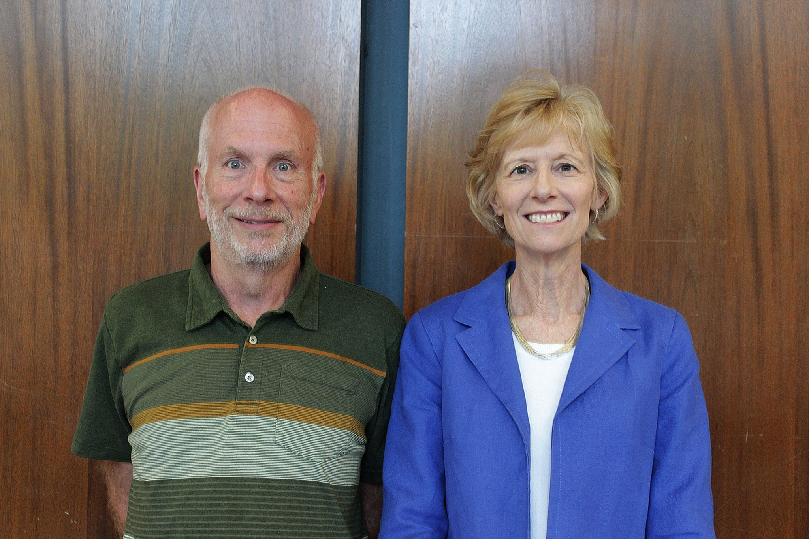

Living Spaces
Old Section Doubles
The Old Section Double is what most people imagine when they think of a stereotypical “college room.” Depending on how much stuff the two people inside it have, doubles can range from spacious to cozy, but don’t worry: there is plenty of space for the creative mind.
Old Section Quads
An Old Section Quad is basically two doubles with a door connecting them. Some Hanszenites choose to put two beds in each room, while others put all four beds in the inner room and treat the outer room as a common space.
New Section Quads
New Section Quads are two doubles that share a common room. New Section Quads share a bathroom with their neighboring quad.
**Hanszen also has singles, triples, and two 5-person suites, but these are more rare than the above room types**